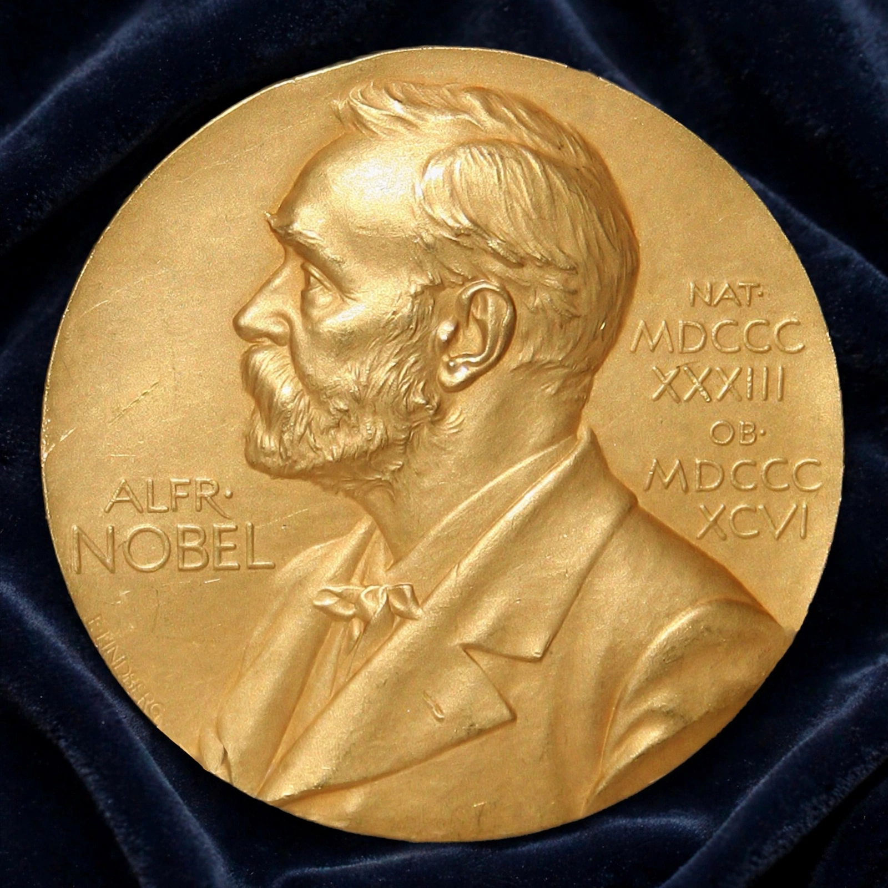

| Nobel Prize in Physiology or Medicine | |
|---|---|
| First awarded | 1901 (Emil von Behring) |
| Awarded by | Nobel Assembly at the Karolinska Institute |
| Presented | 10 December, Stockholm |
| Total laureates | Over 225 individuals (1901–2024) |

The Nobel Prize in Physiology or Medicine is awarded annually by the Nobel Assembly at the Karolinska Institute in Stockholm for outstanding discoveries in physiology or medicine, in accordance with the will of Alfred Nobel. It was first awarded in 1901 to Emil von Behring for serum therapy against diphtheria. The prize may be shared by up to three individuals; it was not awarded in nine years, mostly during the World Wars.
| Year | Laureate(s) | Achievement |
|---|---|---|
| 1901 | Emil von Behring | Serum therapy, especially against diphtheria |
| 1904 | Ivan Pavlov | Physiology of digestion |
| 1906 | Camillo Golgi & Santiago Ramón y Cajal | Structure of the nervous system |
| 1923 | Frederick Banting & John Macleod | Discovery of insulin |
| 1929 | Christiaan Eijkman & Frederick Gowland Hopkins | Discovery of vitamins |
| 1945 | Alexander Fleming, Ernst Chain & Howard Florey | Penicillin and its curative effect |
| 1953 | Hans Krebs & Fritz Lipmann | Citric acid (Krebs) cycle; coenzyme A |
| 1962 | Francis Crick, James Watson & Maurice Wilkins | Structure of DNA |
| 1968 | Robert Holley, Har Gobind Khorana & Marshall Nirenberg | Interpretation of the genetic code |
| 1977 | Rosalyn Yalow (with Roger Guillemin & Andrew Schally) | Radioimmunoassay; brain peptides |
| 1983 | Barbara McClintock | Mobile genetic elements (transposons) |
| 1995 | Edward Lewis, Christiane Nüsslein-Volhard & Eric Wieschaus | Genetic control of early embryonic development |
| 2002 | Sydney Brenner, H. Robert Horvitz & John Sulston | Genetic regulation of organ development and programmed cell death (in C. elegans) |
| 2006 | Andrew Fire & Craig Mello | RNA interference — gene silencing by double-stranded RNA |
| 2007 | Mario Capecchi, Martin Evans & Oliver Smithies | Gene targeting in embryonic stem cells |
| 2012 | John Gurdon & Shinya Yamanaka | Reprogramming of mature cells to pluripotency |
| 2015 | William Campbell, Satoshi Ōmura & Tu Youyou | Therapies against parasitic diseases (avermectin; artemisinin) |
| 2018 | James Allison & Tasuku Honjo | Cancer therapy by inhibition of negative immune regulation |
| 2020 | Harvey Alter, Michael Houghton & Charles Rice | Discovery of hepatitis C virus |
| 2023 | Katalin Karikó & Drew Weissman | Nucleoside base modifications enabling mRNA vaccines |
| 2024 | Victor Ambros & Gary Ruvkun | Discovery of microRNA and its role in gene regulation |
Thirteen women had received the prize by 2024, beginning with Gerty Cori in 1947. The youngest laureate was Frederick Banting, aged 32 in 1923; the oldest was Peyton Rous, aged 87 in 1966. Ralph Steinman (2011) died days before the announcement, unknown to the committee; the award stood. The full official list is maintained by the Nobel Prize organisation.